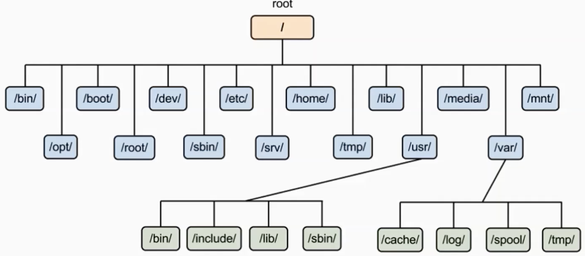
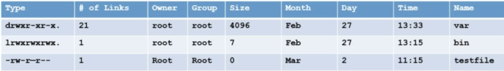

Training
Concepts
What is Linux?
Operating System which sites in the middle of your hardware and users
Unix vs Linux
Unix was first developed for multi-user and multi-tasking in mid 1970 in Bell Labs by ATT. GE and MIT
Then linux was born in 1991 by Linus Torvalds
Linux is mostly free
Linux is open source
Unix is mostly used by Sun as Solaris, HP-UX, AIX etc.
Linux is used by developer communuty or companies (Redhat, CentOs, Debian) etc.
Unix comparitively supports very few File systems
Linux can be installed on a wide variety of computer hardware, ranging from mobile phones, tablets, video game consoles, to mainframes and supercomputers
Download, Install and Configure
Linux Distributions
Redhat
CentOS
Fedora
Suse
Debian
Ubuntu
CentOS vs CentOS Stream
Brief history of CentOS
2004 - Greg Kurtzer forked RHEL to CentOS
2014 - RH took over CentOS
Community Enterprise Operating System
Before Feb 2021:
Fedora > RHEL > CentOS
After Feb 2021:
Fedora > CentOS Stream > RHEL
Linux vs Windows
Linux |
Windows |
|
|---|---|---|
Price Ease Reliability Software Multitasking Security Opensource |
Free Not user-friendly Very reliable, often runs for months or years Mostly enterprise level softwares Best for multi-tasking Very secure Open to public |
$$$ User friendly Often requires reboot Much larger selection of softwares eg office, games, utilities, etc. Multi-tasking is available but with very high cpu or memory resources Somewhat secure Not an open source OS |
Linux Users
US Government Agencies (National, State, Federal, and International)
NASA
Health Care
Bullet trains in Japan runs at the soeed of 150-215m/h
Traffic Control
Financial Institutes eg NYSE
Entertainment industries (cinemas, production houses, etc.)
World e-commerce leaders, including Amazon, eBay, PayPal, and Walmart
Other fortune 500 companies eg Google, IBM, McDonalds, Facebook etc.
System Access and File System
Network Commands
Centos/RHEL 5 or 6 was ifconfig
Centos/RHEL 7 is ip
Centos/RHEL 7.5 and up ifconfig has been deprecated
To use ifconfig in 7.5 use yum install net-tools
Important Things
Linux has super user account called root
root is the most powerful account that can create, modify, delete accounts and make changes to system configuration files
Linux is case-sensitive
ABC is not the same as abc
Avoid using spaces when creating files and directories
Linux kernal is not an OS. It’s a small software within linux OS that takes commands from users and pass them to system hardware or peripherals
Linux is mostly CLI not GUI
Linux is very flexible as compared to other OSs
Linux File System
OS store data on disk drives using a structure called filesystem, consisting of files, directories, and the information needed to access and locate them
There are many different types of filesystems. In general improvements have been made to filesystems with new releases of OS and each new FS has been given a different name. Eg. ext3, ext4, XFS, NTFS, FAT etc.
Linux filesystems store info in a hierarchy of dirs and fiels.
File System Structure
File System Structure and its Description
/boot - contains file that is used by the boot loader (grub.cfg)
/root - root user home directory. It is not the same as /
/dev - system devices (eg. disk cdrom speakers flash drive keyboard)
/etc - configuration files
/bin > / usr/bin - everyday user commands
/sbin > /usr/sbin - system/filesystem commands
/opt - optional addon applications (not part of OS apps)
/proc - running processes (only exist in memory)
/lib > usr/lib - C programming library needed by commands and apps (strace -e open pwd)
/tmp - dir for temp files
/home - dir for users
/var - system logs
/run - system daemons that start very early (eg. systemd and udev) to store runtime files like PID files
/mnt - to mount external filesystem (eg. NFS)
/media - for cdrom mounts
What is Root?
There are 3 types of root on a Linux system
Root account: root is an account or username on Linux machine and is the most powerful account which has access to all commands and files
Root as /: the very first dir of Linux also referred as root directory
Root home directory: the root user account also has a dir located in /root which is called root home dir
File System Paths
There are two paths to navigate to a filesystem
Absolute path
Relative path
An absolute path always begins with a /. This indicates that the path starts at the root directory. An example of an absolute path is cd /var/log/samba
A relative path does not begin with a /. It identifies a location relative to your current position. An example of a relative path is cd /var and cd log cd samba
Directory Listing Attributes
Creating Files and Directories
Creating files
touch
cp
vi
Creating directories
mkdir
Copying Directories
Command to copy a directory
cp
To copy a directory on Linux, you have to execute the cp command with the -R option for recursive and specify the source and destination directories to be copied
cp -R <source_folder> <destination_folder>
Linux File Types
File Symbol |
Meaning |
|---|---|
dash d l c s p b |
Regular file Directory link Special file or device file socket Named pipe Block device |
Finding Files and Directories
Two main commands are useful to find files/directories
find (find . -name “test”)
locate (locate test)
If locate command doesnt output any result, then as rute run updatedb
Also make sure you have mlocate package installed
To check run rpm -qa | grep mlocate
To install run yum install mlocate
Difference Between find and locate
locate uses a prebuilt database, which should be regularly updated, while find iterates over a filesystem to locate files. Thus, locate is much faster than find, but can be inaccurate if the database (can be seen as a cache) is not updated
To update the locate database run updatedb
Changing Password
You should change your initial password as soon as you login
Command = passwd userid
Wildcards
A wildcard is a character that can be used as a substitute for any of a class of characters in a search
* represents zero or more characters
? represents a single character
[] represents a range of characters (ls -ltr *[cd]*)
{} range of fiels to create
backslash as an escape character
^ the beginning of a line
$ the end of a line
Soft and Hard Links
inode = Pointer or number of a file on the hard disk
Soft Link = Link will be removed if file is removed or renamed
Hard Link = Deleting renaming or moving the original file will not affect the hard link
ln (hard link)
ln -s (soft link)
Note: you cannot create a soft or hard link within the same directory with the smae name.
Hard links only work within the same partition
Fundamentals
Commands Syntax
Command options and arguments
Commands typically have the syntax:
command options arguments
Options
Modify the way that a command works
Usually oly consist of a hyphen or dash followed by a single letter
Some commands accept multiple options which can usually be grouoped together after a single hypghen
Arguments:
Most commands are used together with one or more arguments
Some commands assume a default argument if none is supplied
Arguments are optional for some commands and required by others
File Permissions
UNIX is a multi-user system. Every file and directory in your account can be protected from or made accessible to other users by changing its access permissions. Every user has responsibility for controlling access to their files.
Permissions for a file or directory may be restricted to by types
There are 3 types of permissions
r - read
w - write
x - execute (running a program)
Each permission (rwx) can be controlled at three levels
u - user (yourself)
g - group (can be people in the same project)
o - other (everyone in the system)
File or Directory permission can be displayed by running ls -l command
-rwxrwxrwx
Command to change permission
chmod
Remove read rights from group: chmod g-r file
Remove read rights from all (other): chmod a-r file
Remove write rights from user: chmod u-w file
Add read and write rights to user on file: chmod u+rw file
File Permissions using Numeric Mode
Permission to a file and directory can be assigned numerically
chmod ugo+r file
or chmod 444 file
The table below assigns numbers to permissions types
Number |
Permission Type |
Symbol |
|---|---|---|
0 1 2 3 4 5 6 7 |
No Permission Execute Write Execute + Write Read Read + Execute Read + Write Read +Write + Execute |
— –x -w- -wx r– r-x rw- rwx |
chmod 764 file:
File Ownership
There are 2 owners of a file or directory
User and group
Command to change file ownership
chown and chgrp
chown changes the ownership of a file
chgrp changes the group ownership of a file
Recursive ownership change option (cascade)
-R
Access Control List
What is ACL?
Access control list (ACL) provides an additional, more flexible permission mechanism for file systems. It is designed to assist with UNIX file permissions. ACL allows you to give permissions for any user or group to any disc resource.
Use of ACL:
Think of a scenario in which a particular user is not a member of a group created by you but you still want to give some read or write access, how can you do it without making user a member of a group, here comes in picture ACL, CAL helps us to do this trick.
Basically, ACLs are used to make a flexible permission mechanism in Linux.
From Linux man pages, ACLs are used to define more fine-granied discretionary access rights for files and directories
Commands to assign and remove ACL permissions are:
setfacl and getfacl
List of commands for setting up ACL:
to add permission for a user (setfacl -m u:user:rwx /path/to/file)
to add permissions for a group (setfacl -m g:group:rw /path/to/file)
to allow all files or directories to inherit ACL entries from the directory it is within (setfacl -Rm “entry” /’path/to/dir’)
To remove a specific entry (setfacl -x u:user /path/to/file (for a specific user))
To remove all entries (setfacl -b path/to/file (for all users))
Note:
As you assign the ACL permission to a file/directory it adds + sign at the end of the permission
Setting w permission with ACL does not allow to remove a file
Help Commands
There are 3 types of help commands
whatis command
command –help
man command
Tab Completion and Up Arrow
Hitting TAB key completes the available commands, files, or directories
chm TAB
ls j<TAB>
cd Des<TAB>
Hitting up arrow key on the keyboard returns the last command run
Adding Text to Files (Redirects)
3 Simple ways to add text to a file
vi
Redirect command output > or >>
echo > or >>
Input and Output Redirects
There are 3 redirects in Linux
Standard input (stdin) and it has file descriptor number as 0
Standard output (stdout) and it has file descriptor number 1
Standard error (stderr) and it has file descriptor number as 2
Output (stdout) -1
By default when running a command its output goes to the terminal
The output of a command can be routed to a file using > symbol
eg. ls -l > listings
pwd > findpath
If using the same file for additional output or to append to the same file then use >>
eg. ls -la >> listings
echo “Hello World” >> findpath
Input (stdin) -0
Input is used when feeding file contents to a file
eg. cat < listings
mail -s “office memo” contact@calebsargeant.com < momoletter
Error (stderr) - 2
When a command is executed we use a keyboard and that is also considered (stdin -0)
That command output goes on the monitor that outpit is (stdout -1)
If the command produced any error on the screen then it is considered (stderr -2)
We cna use redirects to route errors from the screen
eg. ls -l /root 2> errorfile
telnet localhost 2> errorfile
Standard Output to a File (tee)
tee command is used to store and view (both at the same time) the output of any command
The command is named after the T-splitter used in plumbing. It basically breaks the output of a program so that it can be both displated and saved in a file. It does both the tasks simultaneously, copies the result into the specified file or variables and also displays the result.
Remember -a appends
Pipes
A pipe is used by the shell to connec the output of one command directly to the inout of another file
The symbol for a pipe is the vertical bar (|). The command syntax is:
command 1 [arguments] | command2 [arguments]
File Maintenance Commands
cp
rm
mv
mkdir
rmdir or rm -r
chgrp
chown
File Display Commands
cat
more
less
head
tail
Filters / Text Processors Commands
cut
awk
grep and egrep
sort
uniq
wc
Cut
Cut is a comman d line utility that allows you to cut parts of lines from specified files or piped data and print the result to standard output. It can be used to cut parts of a line by delimiter, byte position, and character
cut filename does not work
cut –version
cut -c1 file - gets the first character from each line
cut -c1,2,4 file - pick and choose character
cut -c1-3 file - list range of characters
cut -c1-3,6-8 file - list specific range of characters
cut -b1-3 file - list byte size
cut -d: -f 6 /etc/passwd - list first 6th column seperated by :
cut -d: -f 6-7 /etc/passwd - list first 6th and 7th column sperated by :
ls -l | cut -c-4 - only print user permissions of files/dir
Awk
awk is a utility/language designed for data extraction. Most of the time it is used to extract fields from a file or from an output.
awk –version - check version
awk ‘{print $1}’ file - list 1st field from a file
ls -l | awk ‘{print $1,$3}’ - list 1st and 3rd field of ls -l output
ls -l | awk ‘{print $NF}’ - last filed of the output
awk ‘/Jerry/ {print}’ file - search for a specific word
awk -F: ‘{print $1}’ /etc/passwd - output only 1st field of /etc/passwd
echo “Hello Tom” | awk ‘{$2=”Adam”; print $0}’ - replace words field words
cat file | awk ‘{$2=”Caleb”; print $0}’ - replace words field words
awk ‘length($0) > 15’ file - get lines that more that 15 byte size
ls -l | awk ‘{if($9 == “caleb”) print $0;}’ - get the field matching caleb in /home/caleb
ls -l | awk ‘{print NF}’
Grep/Egrep
What is grep?
the grep command which stands for “global regular expression print”, processes text line by line and prints any lines which match a specified pattern
grep –version or grep –help
grep keyword file - search for a keyword from a file
grep -c keyword file - search for a keyword and count
grep -i keyword file - search for a keyword ignore case-sensitive
grep -n keyword file - display the matched lines and their line numbers
grep -v keyword file - display everything but keyword
grep keyword file | awk ‘{print $1}’ - search for a keyword and then only give 1st field
ls -l | grep Desktop - search for a keyword and then only give 1st field
egrep -i “keyword|keyword2” file - search for 2 keywords
Sort/Uniq
What are sort and uniq commands?
Sort command sorts in alphabetical order
Uniq command filters out the repeated or duplicate lines
sort –version or sort –help - check version or help
sort file - sorts in alphabetical order
sort -r file - sorts in reverse alphabetical order
sort -k2 file - sort by field number
uniq file - removes duplicates
sort file | uniq - always sort first before using uniq their line numbers
sort file | uniq -c - sort first then uniq and list count
sort file | uniq -d - only show repeated lines
Wc
What is wc command?
The command reads either standard input or a list of files and generates: newline count, word count, and byte count
wc –version or wc –help - check version or help
wc file - check file line count, word count and byte count
wc -l file - get the number of lines in a file
wc -w file - get the number of words in a file
wc -b file - get the number of bytes in a file
wc DIRECTORY - not allowed
ls -l | wc -l - number of files
grep keyword | wc -l - number of keyword lines
Compare Files
diff (line by line)
cmp (byte by byte)
Compress and un-Compress Files
tar
gzip
gzip -d or gunzip
Truncate File Size
The linux truncate command is often used to shrink or extend the size of a file to the specified size
Command
truncate -s 10 filename
Combining and Splitting Files
Multiple files can be combined into one and
One file can be split into multiple files
cat file1 file2 file3 > file4
split file4
e.g. split -l 300 file.txt childfile - split file.txt into 300 lines per file and output to childfileaa, childfileab, and childfileac
Linux vs Windows Commands
Command Description |
Windows |
Linux |
|---|---|---|
Listing of a directory Rename a file Copy a file Move a file Clear screen Delete file Compare contents of files Search for a word/string in a file Display command help Displays your location in the file system Displays the time |
dir ren copy move cls del fc find command /? chdir time |
ls -l mv cp mv clear rm diff grep man command pwd date |
Linux System Administration
Linux File Editor (vi)
A text editor is a program which enables you to create and manipulate data (text) in a Linux file
There are several standard text editors available on most Linux systems
vi - Visual editor
ed - Standard line editor
ex - Extended line editor
emacs - A full screen editor
pico - Begginers editor
vim - Advanced version of vi
Our editor = vi (available in almost every Linux distribution)
vi supplies commands for:
inserting and deleting text
replacing text
moving around the file
finding and substituting strings
cutting and pasting text
Most common keys:
i - insert
Esc - escape out of any mode
r - replace
d - delete
:q! - quit without savinbg
:wq! - quit and save
Difference Between vi and vim Editor
As far as functionality is concerned, both editors work in the same manner. Which editor you choose is a matter of personal choice. Some people recommend learningh the vim editor instead of the vi editor. Due to added features, learning and using vim editor is much easier than the vi editor.
Since vim is based on the vi, when you will learn how to use the vim editor, you will automaticall learn how to use the vi editor
vim has all the features as vi with some excellent addition
There’s also a comprehensive help system and lots of customization options available.
There are many websites taht offer free vim interactive training
Sed Command
Replace a string in a file with a newstring
sed ‘s/Kenny/Lenny/g’ file - output to console
sed -i “s/Kenny/Lenny/g” file - make changes to file
sed ‘s/Costanza//g’ - remove the word Costanza
Find and delete a line
sed ‘/Caleb/d’ file
Remove empty lines
sed ‘/^$/d’
Remove the first or n lines in a file
sed ‘1d’ file - delete first line
sed ‘1,2d’ file - delete first 2 lines
To replace tabs with spaces
sed ‘s/t/ /g’
Show defined lines from a file
sed -n 12,18p file - show only lines 12 to 18
sed 12,18d file - show all but lines 12 to 18
sed G file - add a linebreak to every line
sed ‘8!s/Caleb/C/g’ file - change all lines except line 8
Substitute wining vi editor
:%s/Caleb/Peter/